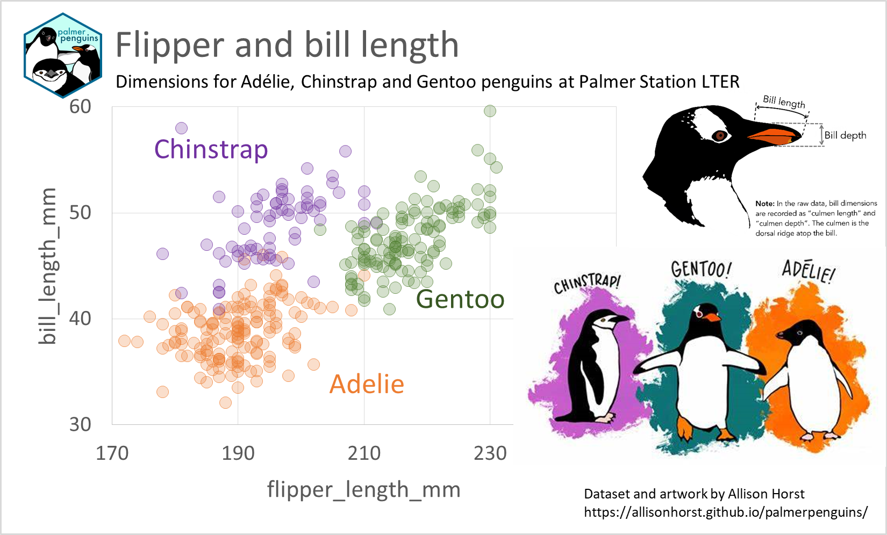

Gráficos de dispersión multiserie en Microsoft Excel (parte 2)
Uso del modelo de datos de Power Pivot y de las fórmulas DAX
AUTOR
Juan Riera
PUBLICADO
February 2, 2023
En el post anterior hemos visto cómo crear un gráfico de dispersión multiserie a partir de una tabla de datos arreglados, en la que una columna proporciona los criterios para la agrupación en clases; para conseguir diferenciar los puntos individuales construíamos dos nuevas columnas en la misma tabla de datos original.
Excel proporciona otro método para añadir columnas modificadas, que parte del modelo de datos incorporado en la hoja de cálculo a partir de la versión 2013.y que se ha refinado y consolidado a partir de la introducción de Power BI y de Excel 2016.
El modelo de datos de Microsoft Excel y Power BI, y los lenguajes M y DAX.
La introducción de Power Pivot y, posteriormente, de Power BI, ha llevado anexa la introducción de dos nuevos y diferentes lenguajes de programación para estos entornos, de uso específico en cada herramienta. Estos lenguajes son M y DAX. Para entender sus diferencias es necesario entender las bases del modelo de datos de Microsoft.
Con el desarrollo de la ciencia de datos en el último decenio, se pusieron de manifiesto nuevas necesidades de consolidación grandes volúmenes de datos de fuentes muy heterogéneas. Esto necesitó el desarrollo de una herramienta diferente de Excel, ya que la utilidad de query original de Microsoft (Microsoft Query) había quedado completamente obsoleta. Esta nueva herramienta fue denominada Power Pivot, y está orientada a la consulta, consolidación, limpieza y reelaboración de las tablas de datos; es capaz de interrogar hojas de cálculo, bases de datos, páginas web e incluso páginas de texto o documentos en formatos WORD o PDF, entre otrosutilizando un nuevo lenguaje desarrollado por Microsoft para PowePivot, el lenguage M.
Microsoft ha desarrollado también una herramienta de análisis y presentación de la información, Power BI, que utiliza los datos consolidados por Power Pivot. Power BI se desarrolló junto con un nuevo lenguaje de programación llamado DAX(Data Analysis Expressions), orientado a la creación de nuevas dimensiones (columnas) o nuevas medidas que faciliten el análisis de las tablas de datos consolidadas.
Un esquema muy sencillo de las diferencias entre M y DAX es éste:
En nuestro ejemplo, vamos a utilizar una función DAX sencilla para calcular las nuevas columnas que necesitamos en nuestro gráfico.
Preparación de los datos
Utilizaré en este ejemplo el dataset palmerpenguins, preparado por Allison Horst en GitHub. Lo he guardado como CSV desde R, mediante la función básica write.csv2(), que genera el CSV con el formato español (punto y coma ; como separador de columnas, coma , como separador de decimales), para que se pueda recuperar en Excel en español sin problema. En la exportación, he evitado números de filas, y he reemplazando los N/A de R por blancos, que en Excel serán celdas vacías.
library(palmerpenguins)write.csv2(penguins, "pinguinos.csv", row.names =FALSE, na="")knitr::kable(head(penguins)) # para mostrar el encabezado de la tabla
species
island
bill_length_mm
bill_depth_mm
flipper_length_mm
body_mass_g
sex
year
Adelie
Torgersen
39.1
18.7
181
3750
male
2007
Adelie
Torgersen
39.5
17.4
186
3800
female
2007
Adelie
Torgersen
40.3
18.0
195
3250
female
2007
Adelie
Torgersen
NA
NA
NA
NA
NA
2007
Adelie
Torgersen
36.7
19.3
193
3450
female
2007
Adelie
Torgersen
39.3
20.6
190
3650
male
2007
que en Excel será
Cómo hacer un gráfico de dispersión desde el complemento Power Pivotde Excel
Queremos hacer un gráfico de dispersión de los datos de flipper_length_cm (longitud de la aleta en cm) frente a bill_length_cm (longitud del pico en cm), agrupado por species.
Para utilizar Power Pivot debemos verificar si el complemento está activo en Excel. Si lo está, nos aparecerá en el menú principal.
Si no está activo, tenemos que activarlo en el Menú>Opciones>Complementos, y en la parte inferior, en Administrar:, seleccionaremos Complementos COM>Ir (ver indicaciones de Soporte Microsoft)
Marcamos las opciones Microsoft Power Map for Excel y Microsoft Power Pivot for Excel.
En el menú principal de Excel debe aparecernos ahora la opción Power Pivot.
A continuación, abrimos el dataset pinguinos.csv y lo guardamos como Libro Excel pinguinos.xlsx (Power Pivot sólo estará activo si la hoja de cálculo tiene este formato).
Con el cursor dentro de nuestra tabla de datos, seleccionamos Menú> Power Pivot> Agregar a modelo de datos.
Esto tiene tres efectos:
convierte nuestro rango de datos al formato de tabla de Excel,
añade la tabla a un nuevo modelo de datos de Power Pivot, y
hace que Excel nos abra la ventana del administrador del modelo de datos de Power Pivot
Excel mantiene esta tabla en memoria sin alterar nuestra tabla original, como podemos verificar cerrando la ventana (Archivo> Cerrar), si bien, como vimos antes, ha convertido nuestra tabla de datos en una tabla Excel.
Hacemos click en Administrarpara volver a nuestro modelo de datos. Vamos a crear dos nuevas columnas en el el modelo, que como veremos, no afectarán a la tabla original. Para añadir una columna, dentro de Power Pivot, seleccionamos Menú>Diseñar>Agregar
La fórmula que vamos a utilizar a continuación es una fórmula en enguaje DAX equivalente a la que hemos utilizado en nuestra hoja de cálculo anteriormente: =Tabla1[bill_length_mm]+CALCULATE(RAND()/100)
Sin embargo, el dataset pinguinos.csv tiene una diferencia con respecto al dataset iris: hay datos que faltan (celdas en blanco). En las columnas que vamos a calcular, debemos prever esta situación para evitar que la fórmula devuelva un valor erróneo.
Esta es la fórmula corregida: =IF(ISBLANK(Tabla1[bill_length_mm]);BLANK();Tabla1[bill_depth_mm]+CALCULATE(RAND()/100)) que devuelve un valor en blanco cuando el valor original es un valor en blanco.
Una vez introducidas las fórmulas para las dos nuevas columnas, insertamos una nueva tabla dinámica desde Power Pivot en una nueva hoja de cálculo. De esta forma, la nueva tabla dinámica toma como tabla de datos el modelo que acabamos de crear.
Construimos nuestro gráfico de dispersión a partir de esta tabla dinámica, igual que hemos hecho en el post anterior, insertando un gráfico de dispersión en blanco e insertando las series manualmente (puedes ver un vídeo demostrativo en este enlace).
En este gráfico, en vez de introducir una leyenda para las series, vamos a utilizar rótulos del color de las series para mostrar cada serie
También insertaremos dos imágenes que proporcionan información adicional sobre los tres grupos de pinguinos y las medidas del pico; recuperamos estas imágenes del repositorio del dataset palmerpenguins.
(a) Los grupos de pinguinos
(b) Medidas del pico
Figure 1: Graficos explicativos que insertaremos en nuestro gráfico de dispersión
Esta esla primera versión del gráfico con las imágenes insertadas:
Comparación de la longitud de la aleta vs la longitud del pico en el dataset Palmer Penguins
La posibilidad de edición visual de Excel nos permite modificar y ajustar el gráfico con facilidad, dando más importancia a los elementos gráficos que actúan como leyenda visual.
Nuestra versión final del gráfico en Excel queda así:

Comparación de la longitud de la aleta vs la longitud del pico en el dataset Palmer Penguins (v. 2)
El gráfico de dispersión nos ha permitido realizar dos funciones:
Visualizar la relación entre los valores de dos variables numéricas. En este caso, hemos podido separar los grupos de población de pinguinos en función de dos características anatómicas.
Comunicar de manera eficaz y visualmente atractiva la información analizada.
Cómo hacerlo en R
En R, el gráfico de dispersión básico es muy sencillo usando ggplot.
## libreriaslibrary(ggplot2)# establece el tema por defecto, en caso de que se haya modificadotheme_set(theme_gray()) ## lee los datosdf_penguins <-read.csv2('pinguinos.csv')## hace el gráficoggplot(df_penguins, aes(flipper_length_mm, bill_length_mm, colour = species)) +geom_point()
Para hacer en R un gráfico equivalente al gráfico final en Excel, más personalizado y con imágenes incrustadas y anotaciones, el código es algo más complejo, como vemos a continuación.
## libreriaslibrary(tidyverse)theme_set(theme_minimal(base_size =15))## lee los datosdf_penguins <- readr::read_csv2('pinguinos.csv') |>mutate(species =if_else(species =="Adelie", "Adélie", species))## lee las imágenesimg <- png::readPNG("culmen_depth.png")i1 <- grid::rasterGrob(img, interpolate = T)img <- png::readPNG("lter_penguins.png")i2 <- grid::rasterGrob(img, interpolate = T)img <- png::readPNG("palmerpenguins.png")i3 <- grid::rasterGrob(img, interpolate = T)## prepara el gráficopaleta_color <-c("darkorange", "blueviolet", "aquamarine4")scat <-ggplot(df_penguins, aes(flipper_length_mm, bill_length_mm, colour = species)) +geom_point(size =3, alpha =0.3, stroke =1) +theme_minimal() +labs (title ="Flipper and bill length",subtitle="Dimensions for Adélie, Chinstrap and Gentoo penguins at Palmer Station LTER",caption ="Dataset and artwork by Allison Horst https://allisonhorst.github.io/palmerpenguins/" ) +theme(plot.title =element_text(size=22),legend.position ="none",plot.margin =margin(1,6.5,1.5,1.5, "cm"),plot.caption =element_text(hjust=0), ) +scale_fill_manual(values=paleta_color) +scale_color_manual(values=paleta_color) +annotate("text",x =185, y =54,label ="Chinstrap",color ="blueviolet",alpha =0.8,size =4,lineheight = .9 ) +annotate("text",x =205, y =34,label ="Adélie",color ="darkorange",alpha =0.8,size =4,lineheight = .9 ) +annotate("text",x =223, y =42,label ="Gentoo",color ="aquamarine4",alpha =0.8,size =4,lineheight = .9 ) +annotation_custom(i1, ymin =43, ymax =63, xmin =235, xmax =280) +annotation_custom(i2, ymin =18, ymax =55, xmin =228, xmax =280) +annotation_custom(i3, ymin =59, ymax =71, xmin =153, xmax =166) +coord_cartesian(clip ="off")plot(scat)
Ventajas e inconvenientes de cada herramienta
A continuación he resumido en una tabla comparativa alguna de las ventajas e inconvenientes de cada método.
Excel
R
Ventajas
La edición del gráfico se realiza de forma visual, es muy sencilla.
La exportación del gráfico es muy sencilla (botón derecho), y puede exportarse a cualquier formato (JPG, PNG, BITMAP, SVG)
Todas las opciones que se han usado en la configuración del gráfico están recogidas en el código, lo que hace que sea totalmente reproducible.
La ubicación de las imágenes incrustadas es muy precisa, basándose en coordenadas X,Y cuyas unidades son las mismas del gráfico.
Inconvenientes
La preparación del gráfico a partir de una tabla dinámica es un poco engorrosa, debido a que las tablas dinámicas no ofrecen gráficos de dispersión
Las opciones utilizadas en la configuración no son explícitas, y no resulta fácil encontrar el detalle de cada opción de configuración utilizada.
Para hacer un formato complejo, es necesario conocer bastante en detalle la codificación en R y en ggplot
El posicionamiento de las imágenes es más engorroso; hay que detallar las coordenadas de cada imagen. El resultado definitivo sólo se consigue por ensayo y error, al no ser posible la edición visual de la que dispone Excel.